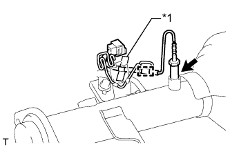
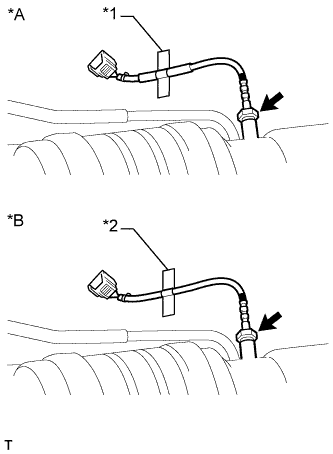
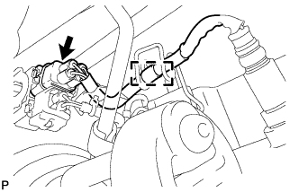

ВЫПУСКНАЯ ТРУБА (для моделей с DPF) > УСТАНОВКА |
| 1. УСТАНОВИТЕ ОПОРУ ЗАЩИТЫ НЕЙТРАЛИЗАТОРА |
Установите 2 опоры защиты нейтрализатора № 1 и 2 опоры защиты нейтрализатора № 2 на приемную трубу.
| 2. УСТАНОВИТЕ ЗАЩИТУ МОНОЛИТНОГО КАТАЛИТИЧЕСКОГО НЕЙТРАЛИЗАТОРА |
Закрепите верхнюю защиту монолитного каталитического нейтрализатора и нижнюю защиту монолитного каталитического нейтрализатора с помощью 4 болтов и 4 гаек.
| 3. УСТАНОВИТЕ ЗАЖИМ ВЫПУСКНОЙ ТРУБЫ В СБОРЕ |
Закрепите зажим выпускной трубы болтом.
| 4. УСТАНОВИТЕ КРОНШТЕЙН ЗАЖИМА ЖГУТА ПРОВОДОВ № 3 |
Установите кронштейн зажима жгута проводов № 3 и закрепите его болтом.
| 5. УСТАНОВИТЕ ДАТЧИК ТЕМПЕРАТУРЫ ОТРАБОТАВШИХ ГАЗОВ № 3 |
|  |
С помощью разрезной головки 14 мм установите датчик температуры отработавших газов № 3.
| *1 | Голубая лента |
Закрепите жгут проводов датчика температуры отработавших газов № 3.
| 6. УСТАНОВИТЕ ДАТЧИК ТЕМПЕРАТУРЫ ОТРАБОТАВШИХ ГАЗОВ № 2 |
|  |
С помощью разрезной головки 14 мм установите датчик температуры отработавших газов № 2.
| *A | для моделей с автоматической трансмиссией |
| *B | для моделей с механической трансмиссией |
| *1 | Желтая лента |
| *2 | Красная лента |
| 7. УСТАНОВИТЕ ДАТЧИК ТЕМПЕРАТУРЫ ОТРАБОТАВШИХ ГАЗОВ |
 |
С помощью разрезной головки 14 мм установите датчик температуры отработавших газов.
| *1 | Зеленая лента |
| 8. УСТАНОВИТЕ ПРИЕМНУЮ ТРУБУ В СБОРЕ |
Закрепите новую прокладку и приемную трубу на выходном патрубке турбины № 2 3 новыми гайками.
Подсоедините приемную трубу к 2 опорам выпускной трубы.
Подсоедините воздушный шланг выпускной трубы № 7 к приемной трубе с помощью нового фиксатора.
| *1 | Метка, нанесенная краской |
| *2 | Стопор |
| *3 | Фиксатор |
| *a | 4 - 10 мм (0,157 - 0,394 дюйма) |
Подсоедините воздушный шланг выпускной трубы № 6 к приемной трубе с помощью нового фиксатора.
| *1 | Метка, нанесенная краской |
| *2 | Стопор |
| *3 | Фиксатор |
| *a | 4 - 10 мм (0,157 - 0,394 дюйма) |
Подсоедините разъем датчика температуры отработавших газов № 3.
Подсоедините разъем датчика температуры отработавших газов № 2.
Подсоедините разъем датчика температуры отработавших газов.
| 9. УСТАНОВИТЕ ДАТЧИК СОСТАВА ТОПЛИВОВОЗДУШНОЙ СМЕСИ |
|  |
Отсоедините разъем датчика состава топливовоздушной смеси и освободите зажим.
 |
С помощью SST снимите датчик состава топливовоздушной смеси с приемной трубы.
| 10. УСТАНОВИТЕ КРОНШТЕЙН ОПОРЫ ВЫПУСКНОЙ ТРУБЫ № 3 |
Установите кронштейн опоры выпускной трубы № 3 и закрепите его 2 болтами.
| 11. УСТАНОВИТЕ КРОНШТЕЙН ОПОРЫ ВЫПУСКНОЙ ТРУБЫ № 2 |
Установите кронштейн опоры выпускной трубы № 2 и закрепите его 2 болтами.
| 12. УСТАНОВИТЕ ПОПЕРЕЧИНУ РАМЫ № 3 В СБОРЕ (для моделей с механической трансмиссией) |
Установите поперечину рамы № 3 в сборе и закрепите ее 4 болтами и 4 гайками.
Вверните 4 болта в поперечину рамы № 3 в сборе.
| 13. УСТАНОВИТЕ ПОПЕРЕЧИНУ РАМЫ № 3 В СБОРЕ (для моделей с автоматической трансмиссией) |
Установите поперечину рамы на подушку задней опоры двигателя и закрепите ее 4 болтами.
Установите поперечину рамы и закрепите ее 4 болтами и 4 гайками.
| 14. УСТАНОВИТЕ ЛЕВЫЙ И ПРАВЫЙ КРОНШТЕЙНЫ ЭЛЕМЕНТА ПЕРЕДНЕЙ ПОДВЕСКИ (для моделей с автоматической трансмиссией) |
Установите правый и левый кронштейны элемента передней подвески, закрепив их 8 болтами.
| 15. УСТАНОВИТЕ ПРАВЫЙ КРОНШТЕЙН ЭЛЕМЕНТА ПЕРЕДНЕЙ ПОДВЕСКИ (для моделей с механической трансмиссией) |
Установите правый кронштейн элемента передней подвески и закрепите его 4 болтами.
| 16. УСТАНОВИТЕ ЛЕВЫЙ КРОНШТЕЙН ЭЛЕМЕНТА ПЕРЕДНЕЙ ПОДВЕСКИ (для моделей с механической трансмиссией) |
Установите левый кронштейн элемента передней подвески и закрепите его 4 болтами.
| 17. УСТАНОВИТЕ ЦЕНТРАЛЬНУЮ ВЫПУСКНУЮ ТРУБУ В СБОРЕ |
 |
При помощи штангенциркуля замерьте длину пружины сжатия в свободном состоянии.
 |
С помощью молотка с пластмассовым покрытием и деревянного бруска запрессуйте новую прокладку до тех пор, пока ее поверхность не окажется на одном уровне с приемной трубой в сборе.
| *1 | Прокладка |
| *2 | Деревянный брусок |
Для 3-дверных моделей:
Установите центральную выпускную трубу на 2 опоры выпускной трубы.
Для 5-дверных моделей:
Закрепите теплозащитный экран выпускной трубы № 1 гайкой.
Закрепите гаситель колебаний 2 болтами.
Установите центральную выпускную трубу на 3 опоры выпускной трубы.
Закрепите центральную выпускную трубу и 2 пружины сжатия 2 болтами.
| 18. УСТАНОВИТЕ ВЫХЛОПНУЮ ТРУБУ В СБОРЕ |
Подсоедините выхлопную трубу к опоре выпускной трубы.
Установите новую прокладку на центральную выпускную трубу.
Подсоедините выхлопную трубу к центральной выпускной трубе.
Вверните 2 болта.
| 19. ПРОВЕРЬТЕ, НЕТ ЛИ УТЕЧЕК ОТРАБОТАВШИХ ГАЗОВ |